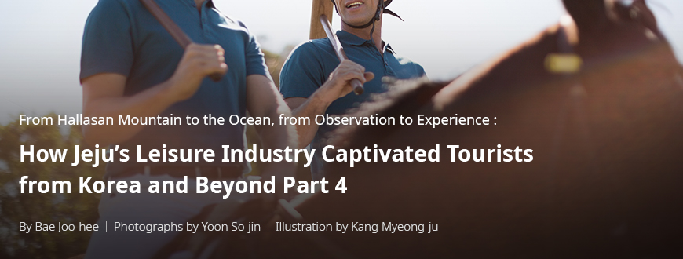
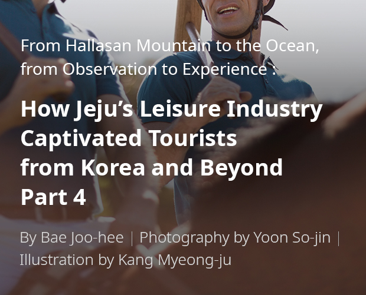
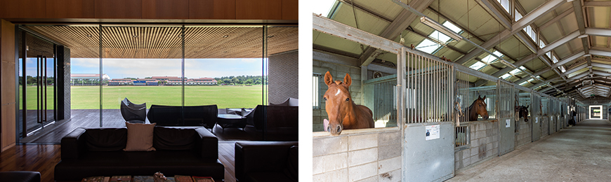
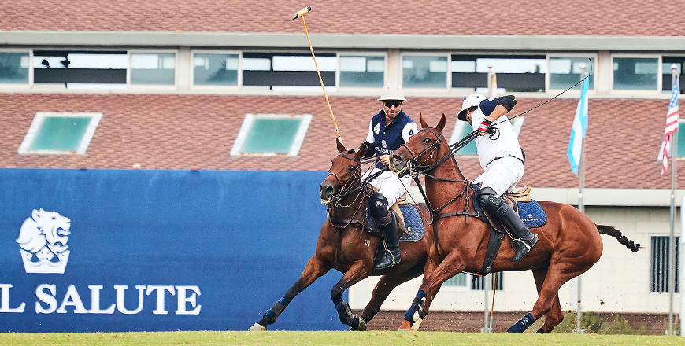
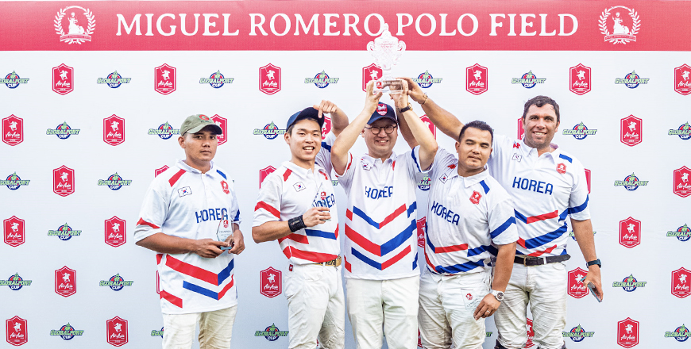

기획취재콘텐츠
- Home
- 제주라이프
- 기획취재콘텐츠
How Jeju’s Leisure Industry Captivated Tourists from Korea and Beyond Part 4새로운 글




Fostering polo culture in Korea, Korea Polo Country Club
- A scene from a polo match ⓒKorea Polo Country Club -
Polo is a sport that dates back to ancient times. Early forms of polo were played when people began to use horses as a means of transportation, and the sport was selected as an official event for the Olympic games. Its players ride horses on a vast field while hitting a ball with mallets, which greatly improves their focus and physical strength. Polo is a gentleman’s sport and a social event. Its perception as an aristocratic sport played by royalties or billionaires deterred its growth as a mainstream sport. However, the number of polo players are increasing across the world. In line with this, the Korea Polo Country Club is working toward fostering the polo culture in the country.
- The vast polo field and the club house of the Korea Polo Country Club ⓒYun So-jin -
Built on a total area of 213,277 m² (64,500 pyeong) in Haengwon-ri, Gujwa-eup, Jeju-si, Jeju-do, the Korea Polo Country Club is Korea’s first and only polo club. Founded in 2005, it was the first tourist business in Korea to receive foreign investment. Construction for the polo field and the club house began in 2008 and was completed in June 2010. The club opened in August of the same year and has been operating for 11 years. It boasts world-class facilities, including a polo field as large as 8 soccer fields combined, an indoor polo field that exceeds international standards, and 2 stables capable of simultaneously accommodating over 60 horses.

- (left)A view of the field from inside the club house ⓒYun So-jin
(right)Spacious and clean stables managed by equestrian experts ⓒYun So-jin -
(right)Spacious and clean stables managed by equestrian experts ⓒYun So-jin -
The club house and the condominium were designed by Itami June, a world-renowned architect with. The buildings, which elegantly combine the local stones and trees with metal and other contemporary building materials, convey the beauty and peacefulness of Jeju and its nature. The Hallasan Mountain standing above the club house roof is one of the prime sceneries that the club presents.
When the club was founded, there was next to no polo players in Korea, which meant that a polo club was a high-risk venture. However, its founder decided to proceed with the project in the long term, in keeping with globalization and the need for networking across all sectors, including society, culture, and economy. The polo community is tight knit, and many members exert significant influence in the economic or political sphere of their home countries, making polo ideal for publicizing Korea.
How Jeju’s geographical features maximize the growth potential and appeal of polo

- ⓒKorea Polo Country Club -
Kim Hyeon-pil, the Executive Director of the Korea Polo Country Club, explained the reason for choosing Jeju as the site for the new club as follows: “Jeju’s winter is shorter than that of the mainland, which makes it easier to maintain the polo fields and horses. We also determined that the breathtaking nature of the island will help us attract international customers because, as a polo club, our marketing and networking activities target customers across the world.” In particular, at the time of preparing the club in the early 2000s, there was no polo club in Northeast Asia. Furthermore, Jeju’s location was conducive to attracting potential polo players in China and Japan.
Furthermore, Jeju has lowered the barriers for foreigner’s entry into the island, in consistency with the island’s identity as an “International Free City.” With the opening of the second international airport in Jeju, the club is likely to boost its marketing activities, as it will be easier to secure customers from beyond Korea.

- The Korea Polo Country Club holding international events on a regular basis to show the Jeju’s beauty to international customers
and participating in international events at overseas clubs to expand its network ⓒKorea Polo Country Club -
and participating in international events at overseas clubs to expand its network ⓒKorea Polo Country Club -
The club has hosted seven international polo events and held numerous exchange events with polo clubs in China and Southeast Asia, with the latter’s international events also attended by the club’s members. In fact, the club was preparing to take part in an international polo event with polo players and clubs from three to four countries in the latter half of 2020. However, because of the COVID-19 pandemic, whether the event will push through is uncertain.
Polo players and involved personnel who participated in events at the Korea Polo Country Club spoke highly of the facilities at the club. They were also highly satisfied with the tourism resources in the island, with some interested in investment. All visitors can watch polo matches at the club for free. At the onset of the games, they are overwhelmed by the size of the field and captivated by the thrill and energy characterizing the sport. For those tired of run-of-the-mill tour programs that skim through key tourist attractions in Jeju, the polo club may present a nice change of pace.
The club’s continued promotion of polo in Korea through PR activites and experience programs
Before the Korea Polo Country Club, polo had no place in the Korean culture. For this reason, the club considers the period between its inception and the club house opening as the preparation period, and it sees the following 10 years to the present as the adoption period. The club was able to survive this long thanks to the members’ love and support for the sport. It anticipates more members from Southeast Asia, China, and Japan.
In addition, the Jeju government plans to promote the island’s equestrian industry, which will improve the growth potential of polo, as long as it is supported by appropriate policies. The Korea Polo Country Club plans to overcome the low awareness of the sport in the country by expanding its PR activities in various ways. Specifically, the club plans to “expand the opportunities to experience what polo is like and attract more members through marketing efforts in and outside Korea.”
- From left to right, Park Yong-ju, a polo player, Yu Gyul, manager at the Korea Polo Country Club, and President Park Geun-seong. ⓒKorea Polo Country Club -
One consideration of the club is to open a university polo league by expanding opportunities to experience and learn polo for horseback riding clubs and other university groups. It also plans to expand polo programs for young children in Jeju, as well as schools and organizations requesting visits to the club. Furthermore, the club announced its plan to enhance its overseas marketing efforts for Southeast Asian countries with major polo clubs (Thailand, Brunei, the Philippines, Singapore, etc.) and China.
Park Yong-ju, a polo player and long-time member of the club, said, “Polo is viewed as a sport only played by the super-rich. However, you don’t have to own a horse to participate, and the game offers a wide range of choices tailored to your preferred experience, including the number of chuckers that you want to play. ) He added, “Children can also play polo as long as they meet the height requirement. It is a sport that you can enjoy for a long time, and it is suitable for all family members. I hope that more people can look past the stereotype and experience the sport.”
※ 4) Chucker: Chucker refers to a round of polo match, similar to a “quarter” in basketball. A typical game consists of six chuckers, with three-minute breaks between chuckers, and a five-minute half-time break. An important match consists of six chuckers.